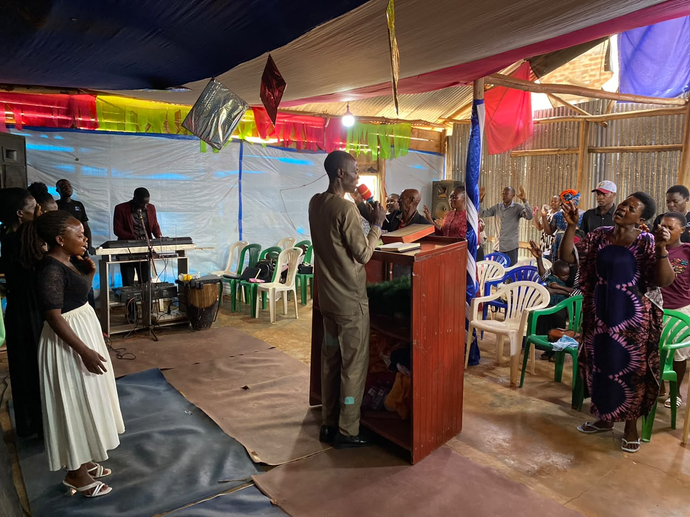
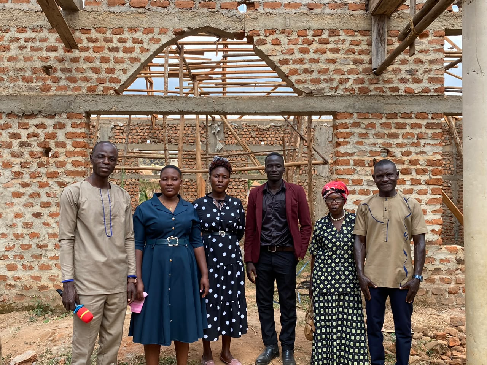

A vibrant Pentecostal ministry in the heart of Kalisizo Town Council, Uganda — dedicated to faith, healing, and personal transformation.
Who We Are
Ebenezer Miracle Center Church is a vibrant Pentecostal ministry located in the heart of Kalisizo Town Council, Uganda, under the pastoral leadership of Pastor Lubega William. The church serves as a spiritual beacon for the local community, dedicated to fostering faith, healing, and personal transformation through the teaching of the Gospel.
Our name comes from 1 Samuel 7:12 — the stone the prophet Samuel raised and called "Ebenezer," saying, "Thus far the Lord has helped us." It is a name we live inside every week: a reminder of what God has already done, and a declaration of what we still expect Him to do.

What Carries Us
We feature an engaging, lively, and Spirit-led worship environment in every gathering.
We are dedicated to the spiritual growth and uplifting of the local Kalisizo community.
Led by Pastor Lubega William, our teaching emphasizes biblical truth and practical, everyday faith.
A strong emphasis on looking to God for spiritual and physical restoration in every service.
Initiatives aimed at supporting families and youth within the wider region, not only our own members.
Where We Meet
Right now, our services are held under a decorated worship tent in Kalisizo Town Council, while just steps away our permanent sanctuary rises brick by brick. The walls stand. The roof trusses are going up. It is, in every sense, a house still being built — much like the faith of every person who walks through its frame each Sunday.
We invite our extended family, friends, and partners near and far to join us in this next chapter, whether through prayer, presence, or partnership in the building project.
Get Directions
LEADERSHIP AT THE BUILD SITE